Grid Sampler
The Grid Sampler allows to read out channels from any node that is grid-based
and output a color for it (except when the channel already contains colors).
This shader is also used for rendering your smoke,fire and explosion simulations with VRay.
Use it in the volumetric settings of the VRay4C4D renderer.
Please see the VRay Gizmo for more setup information.
Channel
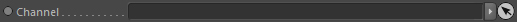
Takes a grid based node. This node is required.
Valid nodes are:
Volumes (SDF)
Surface Reconstructor (implicit grid)
Fluid Dynamics (velocity)
Scalar/Vector channels
Input Minimum
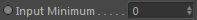
Defines the range minimum used to map scalar values and vector lengths
for being colored by the Color gradient.
Example:
You have a fluid dynamics node linked (which is a vector).
We know the minimum length of the velocity vector can only be 0.0. So this would be our minimum.
Input Maximum
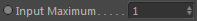
Defines the range maximum used to map scalar values and vector lengths
for being colored by the Color gradient.
Example:
You have a dynamics node linked (which gives us a velocity vector channel).
We know the maximum length of the velocity vector can be arbitrary. So we choose a value of 100.0.
If the velocity length is 50.0, the mapped value is 0.5 (0...50...100. Exactly in the middle of the range).
The color at the gradient center is therefore output.
Use UVW coordinate
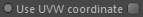
If activated it will use the UVW coordinate and not the world space coordinate.
This is only used for compatibility with old VRay versions (prior to 1.2.6.1) where you need to activate this setting.
Otherwise leave it off.
Advection Timestep
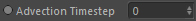
During rendering the channel data can be advected resulting in more details.
Setting this too high may result in artefacts though. The value is given in seconds. The default value of 0.033 represents one frame.
Presets
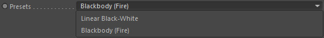
Two coloring modes can be chosen.
Either using a custom color gradient or a blackbody color spectrum (flame colors).
If you use the blackbody mode, the channel values should be defined in temperature range.
Color
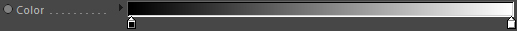
Defines the color of the mapped channel value.
Color (Blackbody)
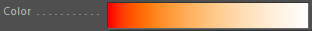
A preview of the blackbody color spectrum.
Tone Mapping Type
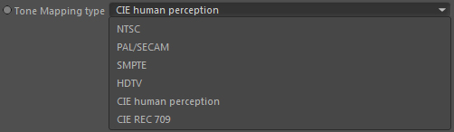
(Only available when Type: Blackbody)
As the Blackbody spectrum is highly dynamic (its intensities can go beyond 100% and are radiance values) it must be converted to RGB space. The tone mapping is used for this. You have several color spaces and encoding systems as targets to accomplish this.
NTSC
Blackbody spectrum as perceived on NTSC systems
PAL/Secam
Blackbody spectrum as perceived on PAL/SECAM systems
SMPTE
Blackbody spectrum as perceived in SMPTE standard (see http://www. smpte.org, SMPTE 0274M HD 1080 Standard)
HDTV
Blackbody spectrum as perceived in HDTV standard
CIE Human perception
Blackbody spectrum taking into account the perception of human eyes (physically most accurate mode)
CIE REC 709
Blackbody spectrum as perceived in HD Widescreen (16:9) standard
Color Boost
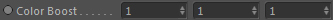
(Only available when Type: Blackbody)
Allows to boost certain colors of the Blackbody spectrum.
X-component: Redish part
Y-component: Yellowish part
Z-component: Red-Yellow shift
Intensity
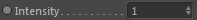
(Only available when Type: Blackbody)
Blackbody intensity. This results in a brighter appearance of the colors.
Temperature scale
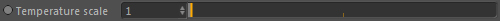
(Only available when Type: Blackbody)
Rescales the temperature that is used to extract the Blackbody colors. This results in the spectrum to be shifted more to the white point.
Grid Sampler::Clipping
Clips the output to the given range.
Output Minimum
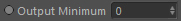
The minimum of the output range. Output colors will not be lower than this value.
Output Maximum
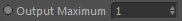
The maximum of the output range. Output colors will not be higher than this value.